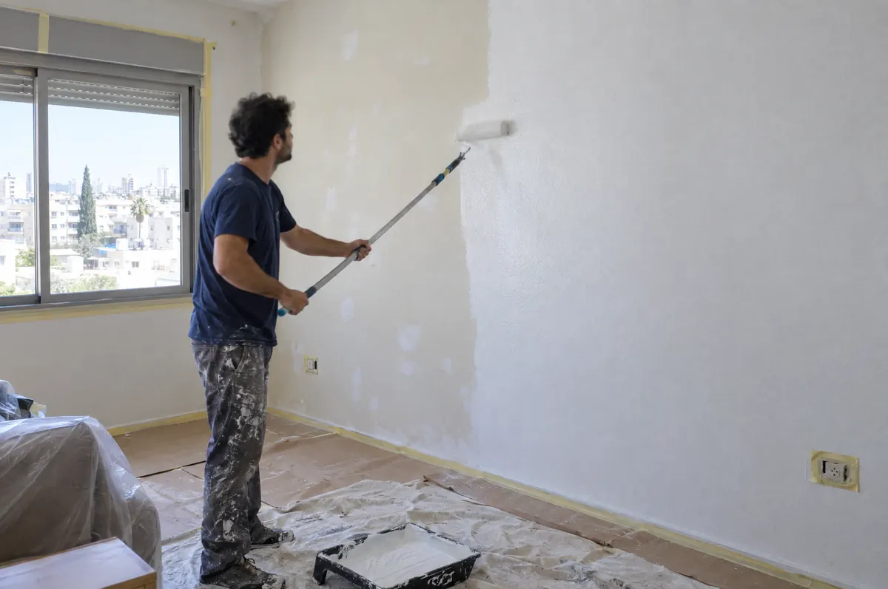

קירות
שנראים חדשים.
צביעה טובה מתחילה בהכנה: מכסים רצפות ורהיטים, סוגרים סדקים, משייפים ומחליקים, ורק אז צובעים. בסוף אתם מקבלים קיר אחיד, קווים ישרים ובית נקי מכתמי צבע.

מה כולל
השירות.
זו רשימת הבסיס. בסיור בנכס נתאים אותה בדיוק למה שאתם צריכים.
- כיסוי רצפות, רהיטים ושקעים לפני העבודה
- תיקון סדקים, חורים ורטיבות שטחית
- שפכטל והחלקת קירות
- צבע אקרילי, סופרקריל ושמנים לפי הצורך
- צביעת תקרות, משקופים ודלתות
- צביעת חדרי מדרגות ולובי בבניינים
- התאמת גוונים לפי בחירה
- ניקיון וסילוק כיסויים בסיום
רואים את ההבדל
כבר תוך כדי.
הכנה, שפכטל וצביעה נקייה לדירות, משרדים וחדרי מדרגות. כל עבודה מתחילה בבדיקה בשטח, כדי שתדעו מראש מה עושים ולמה.
איך זה עובד.
ארבעה שלבים, בלי הפתעות. בכל שלב אתם יודעים מה קורה.
- 1
בחירת גוון
עוזרים לבחור צבע וגימור שמתאימים לחדר ולאור.
- 2
הכנת השטח
כיסוי, מילוי סדקים, שפכטל ושיוף.
- 3
צביעה
שתי שכבות לפחות, קווים נקיים ליד תקרה ומשקופים.
- 4
ניקיון ומסירה
מורידים כיסויים, מנקים ובודקים איתכם כל קיר.
עובדים בכל
הארץ.
מהצפון ועד הדרום. ספרו לנו איפה הנכס ונתאם צוות, סיור ותאריך.
- הצפון והגליל
- חיפה והקריות
- השרון
- גוש דן ותל אביב
- השפלה
- ירושלים והסביבה
- הדרום ובאר שבע
- יהודה ושומרון
שאלות על
צבע.
עוד שאלה? התקשרו או כתבו בוואטסאפ.
צריך לפנות את הרהיטים?
לא חייבים. אנחנו מזיזים למרכז החדר ומכסים בניילון, ובסוף מחזירים למקום.
אפשר לצבוע משרד בלי לעצור את העבודה?
כן. אפשר לעבוד בשעות הערב או בסופי שבוע, חדר אחרי חדר.
אתם מטפלים גם בקירות עם רטיבות?
רטיבות שטחית ועובש אנחנו מנקים ואוטמים לפני הצביעה. אם יש מקור מים בקיר נבדוק אותו קודם, אחרת הכתם יחזור.
שירותים שהולכים
יחד.
הרבה לקוחות משלבים כמה שירותים בהצעה אחת וחוסכים תיאומים.
מה מתכננים
אצלכם?
ספרו לנו בכמה מילים מה צריך, אפשר לצרף תמונות בוואטסאפ, ונחזור אליכם עם הצעה. עובדים בכל הארץ, ללקוחות פרטיים ועסקיים.
052-858-0800